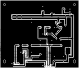

Open the drawings
Schematic
Drawn with wires, not net labels. Every signal net carries a name tag, so the print, the netlist and the board agree on the names. J2 pin 4 carries a no‑connect flag: that is the NUC header's own fan‑supply wire, which this board never touches. The buck is not on the schematic — the module is a purchased part wired to J6 — and neither is R11, the 0 Ω bridge that exists only on the board.

Board — 88.90 × 76.20 mm, one copper layer
F.Cu is the only copper layer and it is the component side: pads, traces, the ground pour and every part are on the same side, so the copper you etch is the copper you solder to. GND is a pour over the whole board — 5 009 mm², one island, solid connection to every GND pad. Flow: 19 V in at J1 top‑right and the module header J6 beside it; the +12 V rail across at y = 17.78 with a riser up the right edge to the 3.3 V regulator; the fan rail (FAN_SW) at y = 20.32 under the three fan connectors; the fan drive in the band at y = 25–43; the tach front end and the PWM divider at y = 50–64; the NUC's fan header J2 bottom‑left and the Pro Mini's header J5 along the bottom edge.


Print the right‑hand sheet with scaling off — its SVG is exactly the board's size — iron the toner onto copper‑clad, etch, drill at the five sizes in fab/nuc-fan-controller.drl (0.90 / 1.00 / 1.02 / 1.10 / 3.20 mm), then cut to the outline.
| Rule | Value | Why |
|---|---|---|
| clearance, every net | 0.70 mm | the isolating scratch a toner‑transfer etch can be trusted to leave |
| minimum track | 0.70 mm | the same scratch, on the other side of the gap |
| drawn rails (+12 V, FAN_SW, 19 V) | 1.80 mm | 0.3 A through 1.8 mm of 35 µm copper is a couple of degrees |
| copper to board edge | 0.50 mm | the outline is sawn, and copper chips at the cut |
| minimum drill | 0.90 mm | below that a hand drill wanders |
| maximum pad | 1.80 mm | on a 2.54 mm grid two 1.80 mm pads still leave 0.74 mm — the clearance rule |
| pour minimum thickness | 0.80 mm | thinner slivers of pour etch clean off |
| annular ring | 0.25 mm | the smallest ring a hand‑drilled hole leaves |
What the checks say. DRC: 0 errors; 26 lib_footprint_mismatch warnings, because every footprint here is a deliberately modified copy (drills ≥ 0.90 mm, pads capped at 1.80 mm, some pitches re‑spaced), and 1 unconnected_items warning, which is R11. logs/verify.py, which does not care what KiCad thinks: every net is one piece of copper (FAN_PWM's two pieces joined by R11), the pour is one island and every GND pad lies inside it, no copper of two nets touches, and the board matches the schematic netlist pin by pin on all 30 components.
Bill of materials — 30 schematic parts, all from the cabinet, plus the board‑only ones
| Refs | Value | Footprint |
|---|---|---|
| C3 | 470uF 25V — pads 5.08 mm apart on the board; the cabinet's 8×20 can has to give up its lead pitch | Capacitor_THT:CP_Radial_D8.0mm_P3.50mm |
| C4, C8, C11, C12 | 100n | Capacitor_THT:C_Disc_D6.0mm_W2.5mm_P5.00mm |
| C7 | 10uF | Capacitor_THT:CP_Radial_D6.3mm_P2.50mm |
| C9 | 100p | Capacitor_THT:C_Disc_D3.8mm_W2.6mm_P2.50mm |
| C10 | 1uF | Capacitor_THT:CP_Radial_D6.3mm_P2.50mm |
| D2 | 1N5819 — kept at the library's 10.16 mm pitch so the silk matches the part | Diode_THT:D_DO-41_SOD81_P10.16mm_Horizontal |
| J1 | 19V IN — male | Connector_PinHeader_2.54mm:PinHeader_1x02_P2.54mm_Vertical |
| J2 | NUC fan header — the shrouded 4‑pin header the NUC's fan plug mates with; its retention‑peg hole is left undrilled because the peg lands on the NUC_PWM lane | Connector:FanPinHeader_1x04_P2.54mm_Vertical |
| J3, J4, J7 | FAN 2 / FAN 3 / FAN 1 — male | Connector_PinHeader_2.54mm:PinHeader_1x02_P2.54mm_Vertical |
| J5 | Pro Mini — male, a 5‑pin strip as it comes | Connector_PinHeader_2.54mm:PinHeader_1x05_P2.54mm_Vertical |
| J6 | BUCK MODULE — 1, 2 GND · 3 19V · 4 12V — male | Connector_PinHeader_2.54mm:PinHeader_1x04_P2.54mm_Vertical |
| Q1 | BC547B — 1 emitter, 2 base, 3 collector | Package_TO_SOT_THT:TO-92_Inline_Wide |
| Q2 | BC547B — 1 emitter, 2 base, 3 collector | Package_TO_SOT_THT:TO-92_Inline_Wide |
| Q3 | IRFZ44N | Package_TO_SOT_THT:TO-220-3_Vertical |
| R2 | 1k | Resistor_THT:R_Axial_DIN0204_L3.6mm_D1.6mm_P5.08mm_Horizontal |
| R3 | 4.7k | Resistor_THT:R_Axial_DIN0204_L3.6mm_D1.6mm_P5.08mm_Horizontal |
| R4 | 2.2k | Resistor_THT:R_Axial_DIN0204_L3.6mm_D1.6mm_P5.08mm_Horizontal |
| R5 | 10k | Resistor_THT:R_Axial_DIN0204_L3.6mm_D1.6mm_P5.08mm_Horizontal |
| R6 | 1k | Resistor_THT:R_Axial_DIN0204_L3.6mm_D1.6mm_P5.08mm_Horizontal |
| R7 | 10k | Resistor_THT:R_Axial_DIN0204_L3.6mm_D1.6mm_P5.08mm_Horizontal |
| R8 | 1k | Resistor_THT:R_Axial_DIN0204_L3.6mm_D1.6mm_P5.08mm_Horizontal |
| R9 | 120R | Resistor_THT:R_Axial_DIN0204_L3.6mm_D1.6mm_P5.08mm_Horizontal |
| R10 | 10k | Resistor_THT:R_Axial_DIN0204_L3.6mm_D1.6mm_P5.08mm_Horizontal |
| TP1 | TACH — no part, a bare pad | TestPoint:TestPoint_Pad_D1.5mm |
| U3 | AMS1117-3.3 — the board's only SMD part; the cabinet's TO‑252, not the SOT‑223 in the same drawer | Package_TO_SOT_SMD:TO-252-3_TabPin2 |
Board‑only parts, which KiCad's BOM correctly leaves out: R11, the 0 Ω bridge (same DIN0204 footprint — a 0 Ω, a scraped‑off lead, or a staple of bare wire), and four MountingHole:MountingHole_3.2mm_M3 holes. Purchased parts, also correctly out: the XL4016E1 step‑down module (cabinet L1 A10 — 5–40 V in, 1.2–36 V out, 8 A, ~180 kHz, 61 × 41 × 27 mm with its two heatsinks), bolted to the enclosure wall and joined to J6 by four wires; and the Arduino Pro Mini 3.3 V / 8 MHz that plugs into J5.
Build order, in short
- Identify the four NUC fan‑header wires with a meter. Mark them before cutting anything.
- Cut, etch and drill the board; check every net with a meter against the schematic before anything is soldered.
- Solder U3 (tin one pad, seat it, solder the tab, then the rest), then the headers, then the resistors, then the capacitors with the electrolytics' polarity last.
- Fit J1, J6, C3 and C4. Set the module to 12.0 V with a meter before it is wired in, and confirm its current limit is released by watching the rail through a fan starting. Then confirm 3.3 V at U3's output.
- Find the fan's stall duty and measure its RPM at two duties. Those four numbers are the calibration constants at the top of the sketch.
- Read TP1 with a frequency counter: it must equal rpm / 30 Hz exactly — it is a hardware timer.
- Connect the tach side to the NUC alone (J2.1 + J2.2) and read the RPM in BIOS.
- Add the PWM wire (J2.3) and watch the serial line while the machine is loaded.
- Only then connect the fans to J7/J3/J4 and splice the stock fan cable.